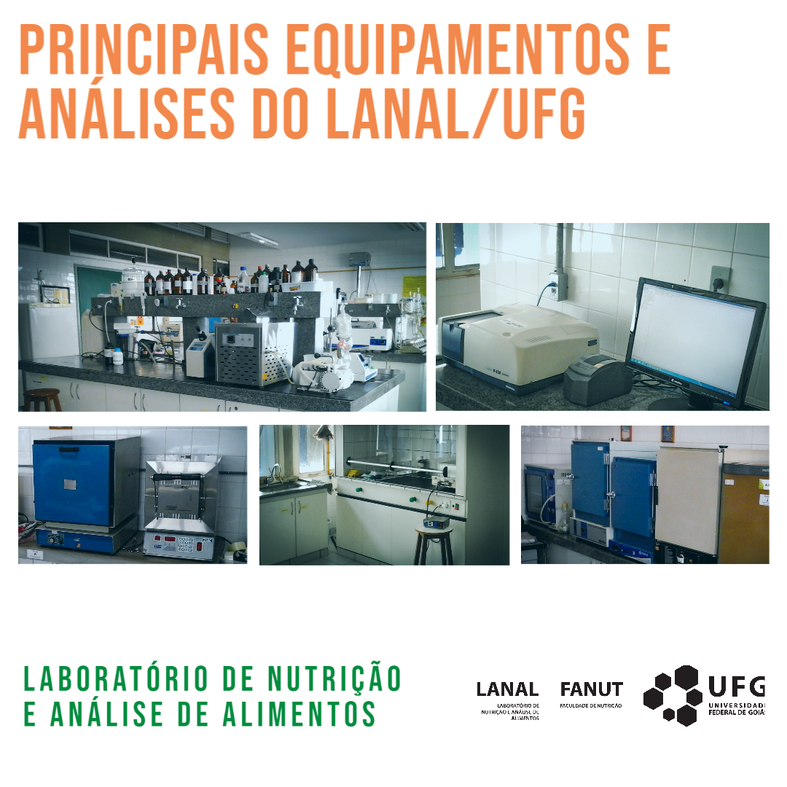
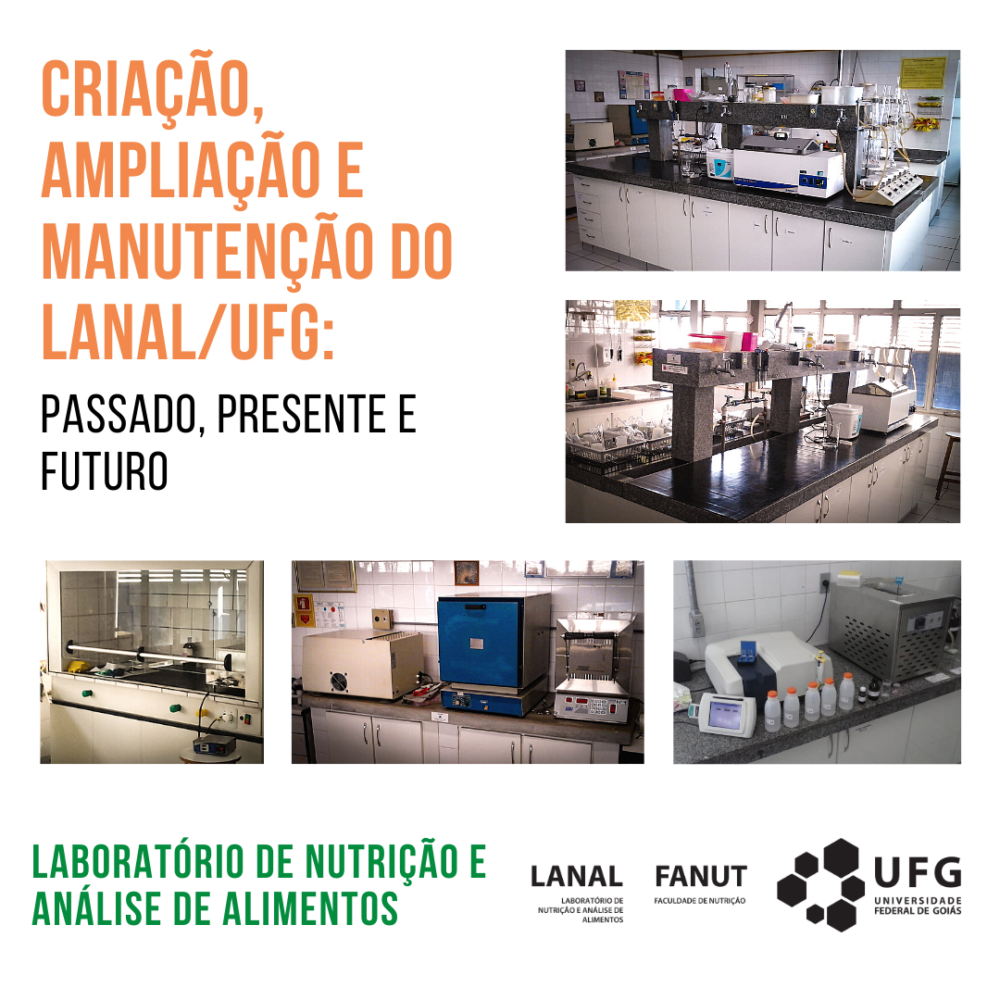

LANAL/UFG
Segurança
Cadastro
Procedimentos
Agenda
Publicações
Blog
Ajuda
Perguntas frequentes
Envie-nos um e-mail
Blog do LANAL
Notícias, dicas e comentários sobre o que acontece no LANAL/UFG
Categorias
Todos
(3)
Análises
(1)
Equipamentos
(1)
Equipe
(1)
História
(1)
Laboratório
(3)

Principais equipamentos e análises realizadas no LANAL/UFG
Laboratório
Equipamentos
Análises
Conheça as principais análises realizadas no LANAL/UFG e os equipamentos disponíveis no laboratório
25 de ago. de 2020
Tiago Dias
Equipe responsável pelo LANAL/UFG
Laboratório
Equipe
Conheça a equipe responsável pelo Laboratório de Nutrição e Análise de Alimentos da UFG.
20 de ago. de 2020
Rodrigo Cavalcante

Conheça o LANAL/UFG
Criação, ampliação e manutenção do LANAL: passado, presente e futuro
Laboratório
História
Conheça o LANAL, Laboratório de Nutrição e Análise de Alimentos onde são realizadas atividades de ensino, pesquisa e extensão na área de alimentos.
10 de ago. de 2020
Tânia Aparecida
Sem itens correspondentes